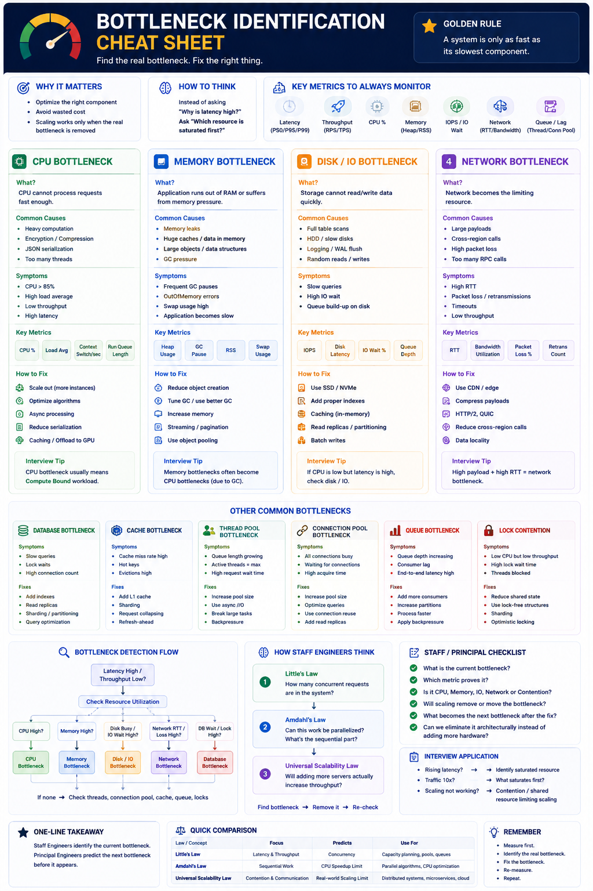

CPU • Memory • Disk/IO • Network • DB • Cache • Queues • Locks
Definition & Golden Rule
A bottleneck is the resource that limits the overall performance, scalability, or reliability of the system.
Golden Rule: A system is only as fast as its slowest component.
Staff Engineers identify the current bottleneck. Principal Engineers predict the next bottleneck before it appears.
Why It Matters
Without finding it: optimize wrong component
Waste infrastructure cost
Scaling doesn't improve performance
Always ask: "Which resource is saturated first?"
Primary Bottlenecks
CPU Bottleneck
CPU cannot process requests fast enough • Compute Bound
Causes
Heavy compute • Encryption • JSON Serialization • Image processing • Too many threads
Symptoms & Metrics
How to Fix
Horizontal scaling • Better algorithms • Async processing • Caching • GPU offload
Tip: CPU bottleneck = Compute Bound workload
Memory Bottleneck
Application runs out of RAM or suffers memory pressure
Causes
Memory leak • Huge cache • Large objects • GC pressure
Symptoms & Metrics
How to Fix
Reduce object creation • Tune GC • Streaming • Object pools • Increase RAM
Tip: Memory bottlenecks often become CPU bottlenecks due to GC
Disk / IO Bottleneck
Storage cannot read/write data quickly
Causes
Full table scan • HDD • Logging • WAL flush • Random reads
Symptoms & Metrics
How to Fix
SSD / NVMe • Indexing • Caching • Read replicas • Batch writes
Tip: CPU low + Latency high = usually IO problem
Network Bottleneck
Network becomes the limiting resource
Causes
Large payloads • Cross-region • Too many RPC calls • High packet loss
Symptoms & Metrics
How to Fix
CDN • Compression • HTTP/2 • QUIC • Reduce RPC • Data locality
Tip: Large payload + high RTT = network bottleneck
Other Common Bottlenecks
Database
Symptoms
Slow queries • Lock waits • High connections
Fix
Index • Read replicas • Sharding • Query cache
Cache
Symptoms
High miss rate • Hot keys • Evictions
Fix
L1 cache • Key sharding • Request collapsing
Thread Pool
Symptoms
Queue grows • Active threads = Max
Fix
Async I/O • Tune pool size • More workers
Connection Pool
Symptoms
All connections busy • High acquire time
Fix
Bigger pool • Faster queries • Read replicas
Queue
Symptoms
Consumer lag • Queue depth ↑ • E2E latency
Fix
More consumers • More partitions • Backpressure
Lock Contention
Symptoms
CPU low • Throughput low • Thread wait high
Fix
Lock-free structs • Reduce shared state • Sharding
Bottleneck Detection Decision Tree
Engineer Thinking Progression
API is slow.
Database is slow.
Which resource is saturated first?
If I remove this bottleneck, what becomes the next one?
System Design Interview Scenarios
Interviewer: "Latency increasing"
CPU? Memory? Disk?
Network? Database?
Queue? Locks?
Thread / Conn Pool?
Interviewer: "Traffic 10x"
What saturates first?
Little's Law →
concurrency needed
= RPS x Latency
Interviewer: "Scaling didn't help"
Contention?
Shared DB?
Network?
Lock? Cache leader?
Full Comparison Table
| Bottleneck | Key Symptoms | Key Metrics | Typical Fix |
|---|---|---|---|
| CPU | High latency, low throughput | CPU %, Load Avg | Scale out, optimise algos |
| Memory | GC pauses, OOM | Heap, GC pause, Swap | Tune GC, reduce allocations |
| Disk / IO | Slow reads/writes, IO wait | IOPS, IO Wait % | SSD, indexing, caching |
| Network | High RTT, packet loss | RTT, bandwidth | CDN, compression, locality |
| Database | Lock waits, slow queries | QPS, conn count | Indexes, replicas, sharding |
| Cache | Misses, hot keys | Hit ratio, evictions | L1 cache, sharding |
| Thread Pool | Request queue growth | Active threads, queue | Async I/O, tune pool |
| Conn Pool | Waiting for connections | Pool utilisation | Increase pool, optimise queries |
| Queue | Consumer lag | Depth, lag | More consumers, partitions |
| Lock Contention | Low CPU, poor throughput | Lock wait time | Lock-free, reduce shared state |
Principal Engineer Checklist
✓ What is the current bottleneck?
✓ Which metric proves it?
✓ Is it CPU, Memory, IO, Network, or Contention?
✓ Will scaling remove or simply move the bottleneck?
✓ What becomes the next bottleneck after the fix?
✓ Can it be eliminated through architecture instead of just hardware?
One-Line Summary
Staff Engineers identify the current bottleneck. Principal Engineers predict the next bottleneck before it appears.
